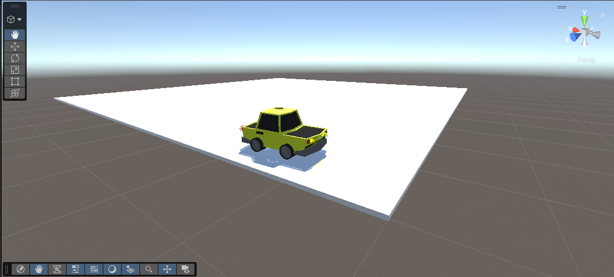

Basis idee
Een racing simulator met een focus op de Group B rally van de jaren '80.
Doelstellingen
- Time Trial modus
- verschillende voertuigen
Uitbreidingen (mogelijk)
- Multiplayer modus
- Extra circuits
Technologie
- Unity 6
- C#
- Blender (indien zelfgemaakte objecten gebruikt worden)
Foto’s / Screenshots
Hier komen later nog meer screenshots of foto's van het project
Planning
Krokus: Vehicle controller werkend (asset) | Paasvakantie: minimaal 1 basis map + 1 auto + checkpoint systeem | Juni: eindversie & demo
momentele planning staat ook op TrelloReflectie
Wordt nog ingevuld tijdens de loop van het eindwerk